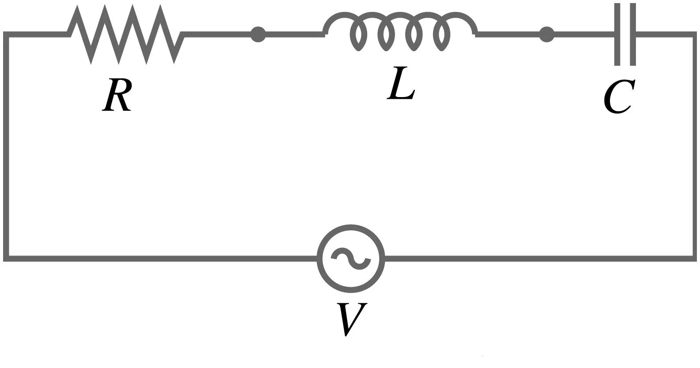

Introduction to Differential Equations
In the sciences and engineering, mathematical models are developed to aid in the understanding of physical phenomena.
These models often yield an equation that contains some derivatives of an unknown function, which is called a differential equation.
Applying Newton's second law to a falling object leads to the equation:
\[ m\frac{d^{2}h}{dt^{2}} = -mg \]where \(m\) is mass, \(h\) is height, and \(g\) is gravitational acceleration.
Dividing by \(m\) and integrating twice with respect to \(t\) yields:
\[ \frac{d^{2}h}{dt^{2}} = -g \] \[ \frac{dh}{dt} = -gt + c_{1} \] \[ h(t) = \frac{-gt^{2}}{2} + c_{1}t + c_{2} \]The constants of integration, \(c_{1}\) and \(c_{2}\), are determined by the object's initial height and velocity.
The rate of decay is proportional to the amount of radioactive substance present.
\[ \frac{dA}{dt} = -kA \quad (k > 0) \]Integrating this equation gives the formula for the amount of substance:
\[ A(t) = Ce^{-kt} \]
(Press Down Arrow for Engineering Applications)
If an equation involves the derivative of one variable with respect to another:
In \( \frac{d^{2}x}{dt^{2}} + a\frac{dx}{dt} + kx = 0 \), \(t\) is independent and \(x\) is dependent.
Order: The order of the highest-order derivative present in the equation.
Linearity: An equation is linear if the dependent variable and its derivatives appear in additive combinations of their first powers only.
\[ a_{n}(x)\frac{d^{n}y}{dx^{n}} + \dots + a_{1}(x)\frac{dy}{dx} + a_{0}(x)y = F(x) \]